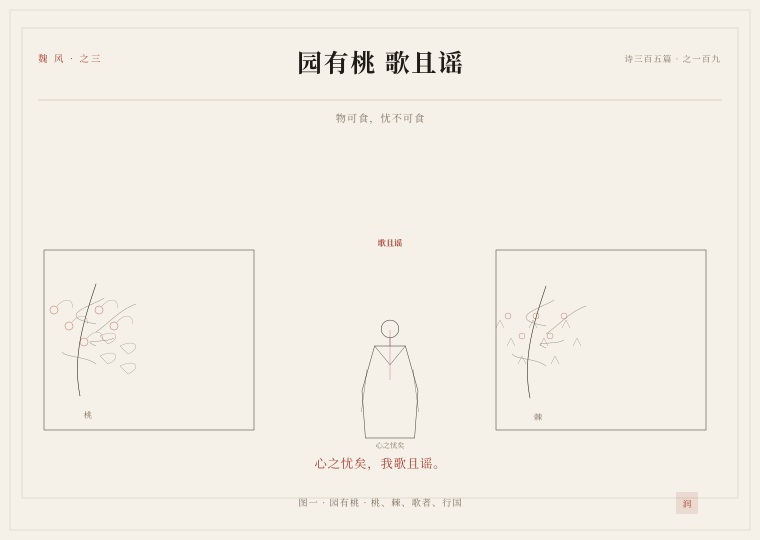
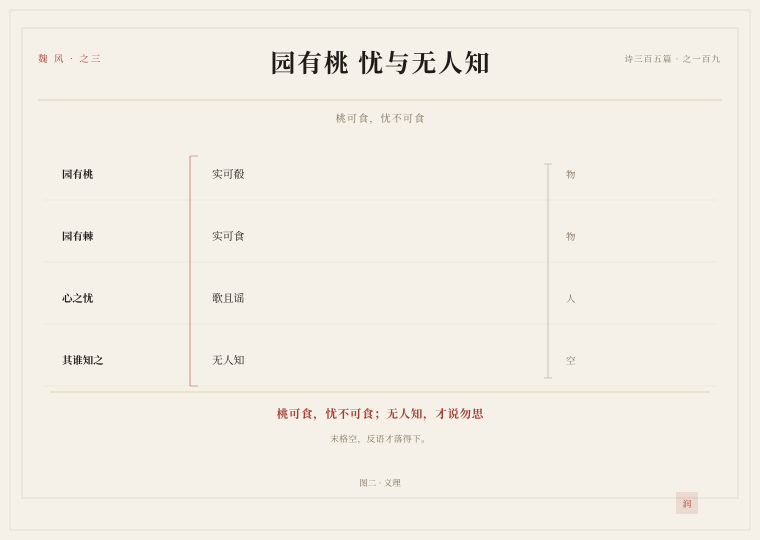

第一百九篇 园有桃
魏风 · 之三 SJ109
朗读 · 普通话
依经文原文朗读，章次不读出；配古琴底乐，不改速、不加拖腔。全库同一音色（豆包 TTS），非播音员录制。
一 解题
诗三判：
- 谁在说：魏国大夫。园中有桃、有棘，可以充饥；他心里忧国，歌且谣、行国，却被人说“骄”“罔极”。
- 说什么事：二章只换桃/棘、殽/食、歌谣/行国、骄/罔极。物可食，忧不可食；人可见，心不可见。
- 为何编在此：107 刺褊，108 刺位塞，109
刺“忧无人知”。一国将衰，先无人听忧。
《毛序》：“《园有桃》，刺时也。大夫忧其君国小而迫，而俭以啬，不能用其民，而无德教，使人日作是诗也。”
朱子《诗集传》：“兴也。园有桃，其实之殽，言园有桃则可食其实矣，而我心之忧，则歌且谣也。不我知者，谓我士也骄。彼人是哉，子曰何其？言彼人自以为是我，而子独何为如此也。盖亦勿思，言不如此，则亦无所思矣。”
本库的看法：《园有桃》是一首把“忧”写成“无人知”的诗。
桃、棘是眼前可食之物；忧不是为己，是为国。歌谣、行国是排遣；别人一句“骄”“罔极”，把忧判成毛病。末句“盖亦勿思”不是劝止，是反语：不思，才不忧；可谁能不思？
断语：桃可食，忧不可食；无人知，才说勿思。
先辨五事：“殽”是菜肴，不是“混殽”；“士”是大夫、士人，不是“士兵”；“骄”是骄慢，不是“骄傲自满”泛称；“罔极”是无极、无准，不是“没有极限”；“盖亦勿思”是反语，不是“别想了”。
二 经文
第一章
园有桃，其实之殽。
心之忧矣，我歌且谣。
不我知者，谓我士也骄。
彼人是哉，子曰何其。
心之忧矣，其谁知之？
其谁知之，盖亦勿思。
第二章
园有棘，其实之食。
心之忧矣，聊以行国。
不我知者，谓我士也罔极。
彼人是哉，子曰何其。
心之忧矣，其谁知之？
其谁知之，盖亦勿思。
分章：二章，章十二句。
三 韵读
- 一章：殽、谣、骄、何、之、思，宵部转之部；“之”两见，问句收。
- 二章：食、国、极、何、之、思，职部转之部；“思”两见，反语收。
读法：两章韵脚几乎同；只换“殽/食”“谣/国”“骄/极”，骨架不动。
四 字义与名物
- 园：园圃。桃：桃树；棘：酸枣树。殽：菜肴；食：吃。
- 歌且谣：合乐为歌，徒歌为谣；歌谣是长言。
- 不我知者：不了解我的人。士：士人、大夫。骄：骄慢。
- 彼人：那些人。是哉：以为自己对。子曰何其：“你又为什么这样？”
- 罔极：无极、无准；一说“罔极”为“无中”。
- 盖亦勿思：大概不想它罢了；反语。
五 今译
园里有桃，它的果实可做菜。心里忧愁，我唱歌又吟谣。不了解我的人，说我这个士人骄慢。那些人对吗？你又为什么这样？心里忧愁，谁能知道？谁能知道，大概不想它罢了。
园里有酸枣，它的果实可吃。心里忧愁，姑且走遍国中。不了解我的人，说我这个士人没有准。那些人对吗？你又为什么这样？心里忧愁，谁能知道？谁能知道，大概不想它罢了。
六 章旨
- 一章：写“桃可食”与“忧不可食”。歌谣是排遣；“骄”是别人给的判词。
- 二章：写“棘可食”与“行国”。行国是走避；“罔极”是别人给的第二判词。
- 总收：忧在国，不在身；无人知，故说“勿思”。
反语一落，忧更重。
七 诗教
- 兴：由园桃、园棘起，兴到心忧；眼前可食，衬出心中不可食。
- 观：观“忧”怎样被误读。忧国被读成骄慢，行国被读成无准；一国的耳朵坏了，先于国坏。
- 群：忧者与“不我知者”相对；不是无人，是无人懂。
- 怨：怨在“其谁知之”两问；问而不答，怨而不怒。
八 分寸与边界
- 不可把“殽”当“混殽”。它是菜肴；一读混殽，园桃就不成充饥。
- 不可把“士”当士兵。它是士人；一读士兵，忧国就成军怨。
- 不可把“骄”当赞美。它是别人给的贬词；一读赞美，反讽就没了。
- 不可把“罔极”当“没有极限”。它是无准；一读极限，判词就轻。
- 不可把“盖亦勿思”当劝人别想。它是反语；一读劝止，全诗就成自我安慰。
九 存疑
- 诗旨：毛序“刺时，大夫忧其君国小而迫”；朱子“兴也”，以园桃起忧。本库从“忧无人知”读。
- “殽”：毛传“殽，食也”；一说“菜肴”。从菜肴，与“食”对。
- “士”：毛传“士，事也”；一说士人。从士人，才与“骄”合。
- “罔极”：毛传“极，中也”；朱子“罔极，言无中正也”。从无准。
- “盖亦勿思”：一说“盖，何不也”；一说反语。从反语，才见忧深。
十 跨典
- 《论语·卫灵公》：“君子忧道不忧贫。”——忧国有其道；此诗之忧，正是忧道。
- 《孟子·梁惠王上》：“为民父母，使民盻盻然，将终岁勤动，不得以养其父母。”——国小民困；与此诗“园有桃”对读。
- 《左传·襄公二十九年》：“美哉，忧而不困者也。”——季札评魏风；“忧而不困”四字，可作此诗定评。
- 《诗经·魏风·葛屦》：“维是褊心，是以为刺。”——107
刺君心窄，109 刺无人听忧；一窄一聋，魏国所以亡。
十一 双卡与图
双卡八对：
| 殽（菜肴） |
殽（混殽） |
| 士（士人） |
士（士兵） |
| 骄（别人贬词） |
骄（赞美） |
| 罔极（无准） |
罔极（无极限） |
| 歌谣（长言） |
歌谣（随便唱） |
| 行国（走遍国中） |
行国（出国） |
| 彼人（那些人） |
彼人（那个人） |
| 勿思（反语） |
勿思（劝止） |

图一 · 园有桃 桃、棘、歌者、行国

图二 · 园有桃 忧与无人知
读图三处：
- 桃与棘：图一左桃、右棘，只画枝、叶、果，不画满树；果可食，忧不可食。
- 歌者：中一人背影，口部不画，只画一手按心；歌在声外，忧在身内。
- “无人知”在右：图二左“忧”一格实，右“知”一格空；空一格，末句反语才落得下。